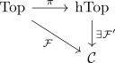

homotopy invariant functor
Definition
Let $\mathcal{C}$ be a category, $\mathrm{Top}$ category Top (resp. category Top*, category TopPairs) and $\mathcal{F}: \mathrm{Top} \rightarrow \mathcal{C}$ a functor. Then $\mathcal{F}$ is said to be homotopy invariant, if $\mathcal{F}$ factors through Category hTop (resp. Category hTop*, Category hTopPairs)

see: